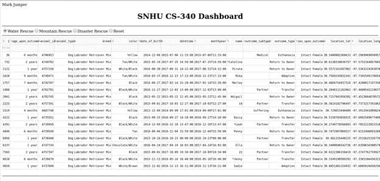
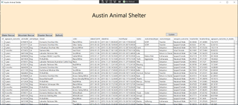
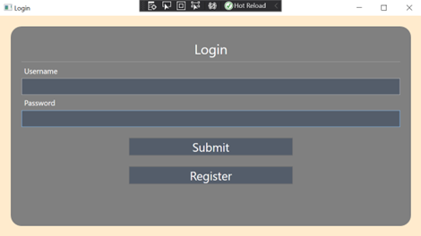
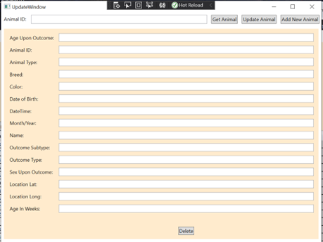

Software Design and Engineering
Description:
- Re-create CS 340 project Dashboard as a WPF Application
- Create Login Screen for Username and Password
- Create seperate window to perform CRUD methods
Narrative
The project artifact that I chose to demonstrate Software Design and Engineering is from CS 340 – Client/Server Development and was created in April 2023. In this project, there is a Dash Plotly application that renders a UI to display information from a MongoDB database. The skills and abilities I wish do demonstrate is in the creation of the UI and its use of the HTML/CSS libraries. The are Python libraries that are used within Jupyter Notebooks. The skills and abilities in Software Development that I would like to focus on is in having the capability to learn new syntax and ways of programming within a given time frame as I only had a few weeks to learn how to work with Dash Plotly and have the project be functional.
To also demonstrate proficiency in Software Design and Engineering, and the ability to learn another language, my enhancement is to create a Windows WPF Application that has a similar UI. In doing this, I had to learn how to work with the XAML to create the UI, along with Object-Oriented programing with the action calls to the buttons. In addition, the original CS 340 project had “in-text” username and password stored as variables. For this reason, I chose to create another screen to prompt for a username and password to allow for make changes to the data. This then opens to another screen that allows for CRUD operations with textboxes for each field.
  The course outcomes for Software Design and Engineering were met by having completed the WPF application. I demonstrated this by taking a design written in one application and converted into another. The addition of a Login Screen also showcases the implementation of security that was not included in the original project. As with any new project, a bit of planning is involved. However, with the help of the designing tools provided by Microsoft, creating the WPF application’s UI was not too difficult to conceptualize.
The learning of both of these projects had their own respective challenges. First with the Dash Plotly, I had to import the python module that held the CRUD definitions to the MongoDB to display the required data. The next piece to the puzzle was in the HTML syntax. It was not until after this course that I took a course on HTML and CSS, so these were also new concepts to learn with HTML tags and headers. I needed to search online for the Dash Plotly libraries along with the HTML and CSS to generate the layout. For the DataGrid, this was possible with using a table method, then passing the required Pandas Data Frame with the data from MongoDB. When learning to create the WPF application, designing the UI was not too difficult to learn. However, the difficulty came with learning to create meaningful names to the buttons being used in the XAML code and their actions. This lead to the object-oriented aspect of the C# code written to perform the required functions when interacting with the buttons.
The code for each of these projects are in the attached files.